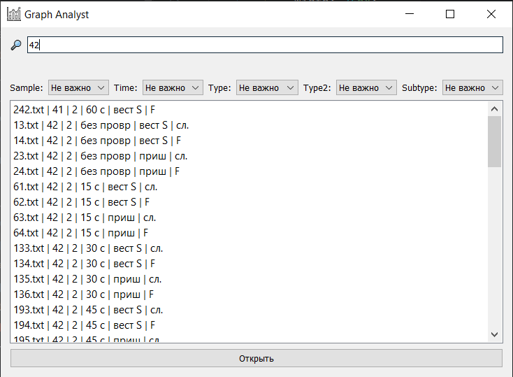
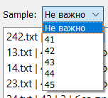
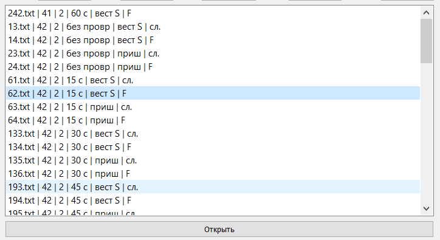

В данном разделе описывается работа с окном поиска файлов в программе.
Окно поиска позволяет найти файлы по различным параметрам, таким как sample, time_ms, type, type_2 и subtype.
Пользователь может ввести запрос в строку поиска, и результаты обновятся в реальном времени.

Рис. 1 - Основной интерфейс окна поиска и ввод запроса в строку поиска
С помощью выпадающих списков можно дополнительно отфильтровать результаты поиска.

Рис. 2 - Применение фильтров для поиска
После поиска файла пользователь может выбрать нужный файл в списке.
После выбора файла можно нажать кнопку "Открыть", и программа загрузит соответствующий график.

Рис. 3 - Выбор нужного файла из списка
Окно поиска позволяет удобно находить и загружать файлы, используя различные параметры.